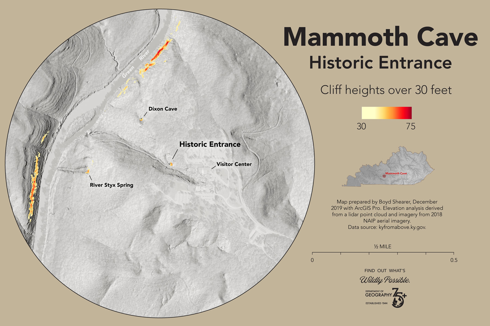

Mammoth Cave Historic Entrance
University of Kentucky Geography
This map is centered on Mammoth Cave's historic entrance, which leads adventurers into the world's longest known cave system, with over 400 miles of explored passages (nps.gov). Also shown are trails and points of interest in the park to help adventurers discover unique locations in the park. Contour interval is 10 vertical feet with labels every 100 ft.
Introduction
This modest cave opening leads visitor into a vast underworld with a unique ecosystem and history. The park was established in 1941, became a World Heritage Site in 1981, and is visited by over 500,000 adventurers each year (wikipedia.org).
Goals of this project
- Map the entrance and surrounding area with high-resolution aerial lidar data
- Measure karst features
- Visualize the above-ground features around the entrance
Sources and tools
Map was produced by Boyd Shearer for the University of Kentucky Department of Geography, December 2019. This map is part of a final project in GEO 409.
Elevation data was acquired from the Kentucky's Elevation Data & Aerial Photography Program (KyFromAbove.ky.gov). Color aerial imagery was acquired from the National Agriculture Imagery Program (NAIP) stored on public FTP server maintained by Kentucky Division of Geographic Information (DGI).
- ArcGIS Pro was used to process lidar data and produce elevation derivatives.
- Mapbox (with geolocation services enabled) for the above map.
- A Python script was developed to automate this process and is found in this Jupyter Notebook
Photographs


This animated point cloud shows the trail that leads to the entrance and cave opening. The camera flies under the pedestrian bridge that connects the Visitor Center with the gift shop. The points are colored by the 2018 color aerial photography. Ground features covered by tree canopy are colored by the top of the canopy.
{kind=link}
This analysis used Focal Statistics in ArcGIS Pro to calculate the elevation range of ground features within 15 feet of each input cell of the digital elevation elevation model (DEM). Only elevation ranges over 30 feet are shown. One can clearly see cave and spring openings.
The open source Potree point cloud renderer quickly builds an interactive, 3D web map. The utility offers a series of tools to help viewers measure features on the map.